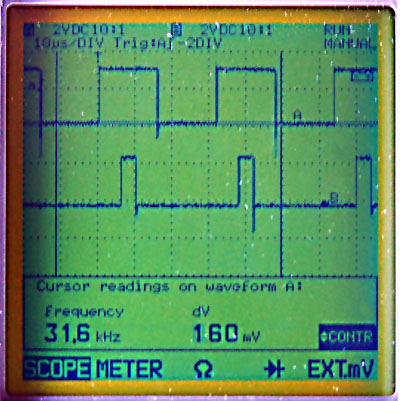

Examples - HowTo - TimerDCMotorBackground
Timer DC-Motor Background
This Article is a collection of some Background Knowledge and some code-snippets i used for the Embossing Printer
Project and therefor mostly how to control a DC Motor. Additionally you
will find some informations and links concerning Timers/Counters, PWM
and working with you Micro-Controller at Bitlevel.
Overview
To Handle the Power/Current of a strong ( >40mA ) DC-Motor you will need a Motordriver, whose most important electronic component is a H-Bridge.
To control the speed of the motor the easiest way is to use the
PWM-Output Pins / analogWrite(). To get some feedback of the motors
position or speed a encoder will do a good job.
analogWrite and PWM
The Arduino Command analogWrite uses Pulse Width Modulation (PWM) to simulate different Voltages. A PWM-Signal is continuously squarewave switching between High and Low. The time slice of the Signal being High compared to the Time of one Period is called Duty:
Example:
A 25% Duty with 5V Signal-Maximum will result in a mean Voltage of 1.25V.
See also:
http://www.arduino.cc/en/Reference/AnalogWrite
http://arduino.cc/en/Tutorial/PWM
PWM-Background: Timers
Of course it is possible to implement a Software-based PWM by continuously using digitalWrite() within the main loop (see code example).
But it will be hard, to do this with precise timing, insensitive to
interrupts, and without consuming to much CPU-Power, or occupy the CPU
by busy waiting.
Therefore
the Arduino / ATMega Microcontroller has at least 3 Timers / Counters
that can do this work independent of the AVR-CPU. Basically you can
imagine those Counters similar to the second hand of a clock. They are
not counting continuously from 0 to 60, but from 0 to a predefined Value
( eg 2^8- 1 = 255 or 2^16-1 = 65535 ). By modifying the Timer/Counter
Registers the Timers can have different behaviors too.
The standard Arduino-Behavior is the PWM-Mode for Timer0 and the Phase
Corrected PWM-Mode for Timer1 and 2. This modes allow each timer to
control two PWM-pins, by switching the Pins at the beginning of each
counting-loop and at a given Value. ( for our Example a 25% Duty will
switch a Pin at 0 and 64, if the TOP-Value is 255).
This behavior is defined in the wiring.c file that is part of the arduino-enviroment. The Timer-registers a set in the init() Function.
The main source of information about the Timers is the Microcontrollers datasheet.
But
maybe you need this information combined with more software examples -
then you should have a look at this nice Article about
PWM-Background.(both links have same content):
secrets-of-arduino-pwm
SecretsOfArduinoPWM
Bitwise Operations
If you want to change the Timer-Mode / behavior directly you should
have some basic knowledge about manipulating single bits within one
Byte. I uploaded some code example.
See also the Arduino reference(bitwise operations) and also have a look at Bit Math Tutorial.
You also should not get confused by some macros like cbi(), sbi() or _BV(). Those Macros adress the preprocessor and their Definition is simalar to a function:
//from avr/sfr_defs.h in avr-libc: #define _BV(bit) (1 << (bit)) //from some other source #ifndef cbi #define cbi(sfr, bit) (_SFR_BYTE(sfr) &= ~_BV(bit)) #endif #ifndef sbi #define sbi(sfr, bit) (_SFR_BYTE(sfr) |= _BV(bit)) #endif
cbi is similar to arduino BitClear function
sbi is similar to arduino BitSet function
_BV(x) is just creating a Byte by bitshift of 1 by x positions
If you even want some more detailed knowledge, there is a nice article
about what happens at the bit-level, when programming a simple blinking
Led:
arduino_interna
Addressing Registers
The most important source of information is the datasheet of your microcontroller. But if you read it the first time, you might get confused of some Register-addresses like OCRnx or TCNTn.
Please notice, that the lower-case letters are used as placeholders for
the timer-number n ( 0,1,2,..4) and the channel x (A,B,C). Though OCRnx
is meant to be OCR0A,OCR0B,OCR1A, ... and TCNTn is a placeholder for
TCNT0,TCNT1,.. \\- some arduino-microcontrollers only have 3 timers
(0..2) and two Channels (A,B)
31 kHz PWM
If you control a DC-Motor - best using a H-Bridge and an additional
power supply / batterie, the PWM-Output will help you to control the
Speed of the Motor. A Motor has an inductive load and also behaves as a
dynamo while not being supported with electric power, but still moving.
This results in some unwanted effects, mainly heat production in the
H-Bridge and the Diodes and loss of torque. Therefore it is a good idea
too increase the PWM-Frequency up to 30kHz. This is also beyond the
audible range - so there will not be any humming.
You can change the PWM-Frequency by changing the Timers prescaler to
different factors - see p 156 of the Microcontrollers datasheet.
How to change the PWM of Timer2 to 31kHz you'll find in this example code.
To see the result of the different prescaler, you need to analyze the PWM-Output with an Oscilloscope:
|  | You can see a 50.0% Duty at Channel A a 12.5% Duty at Channel B and a frequency of 31.6kHz You can also see that the Mode is phase-corrected PWM, as both squarewaves share their symmetry-axis |
some Background wikipedia-links:
Electromagnetic_induction
Dynamo
Torque
Oscilloscope
H-Bridge
this diagramm shows, how to run a motor in both direction with 4 switches. This is also the background idea of a H-Bridge, but the switches are not mechanical, they are transistors of MOSFET
As already mentioned - to control a Motor that needs more than 40mA, you
need an additional power supply / battery. If you don't need to change
the direction of the motor, a single transistor, or better a MOSFET can do the job.
If you also want to control / change the motors direction you will need 4 MOSFETs or more common a single H-Bridge,
which includes them. A simple model for a Transistor or a MOSFET is a
Resistor, that changes from infinite to nearly 0 as soon as the Input
Voltage reaches a certain height / value ( the Input will be the Base of
the Transistor or the Gate of the MOSFET ) ( maybe a electronic
engineer will not like this explanation ).
A lot of Arduino projects use the Type L298
(up to 2A) that is quite cheap but does not use latest technology.
Therefore it dissipates some energy and gets quite hot. A better
alternative is L293, but this chip only handles 1A. A very strong ( 2 or even 5 A), but more expensive solution is L6202 that is based on DMOS technology. This chip also produces very little heat.
A cooling element combined with heat-conductive paste and fixed with some drops of superglue is a good addition.
Circuit
As not being a electronic engineer, i can not give precise
recommendations on the entire circuit implementing the H-Bridge. I
successfully used the right part of the circuit at p.12 of the L6202-datasheet.
Rotary Encoder
To query the motors speed and position i use an encoder wheel with
radial slots. The bars and the slots have the same dimension. The wheels
are cut on a laser out of 2 mm black cardboard. To make them more
stable i used resin to cover the outer edge/ring.\\To count the slots
that passed by i use Timer1 with the prescalar set to external clock.
You will find more information about this and some code snippets here
Article by
Tom Pawlofsky Mai 2010
contact
pawlofsky–AT-arch-DOT-ethz-DOT-ch
please feel free to email any comments, misstakes or improvements.
this page is linked to: